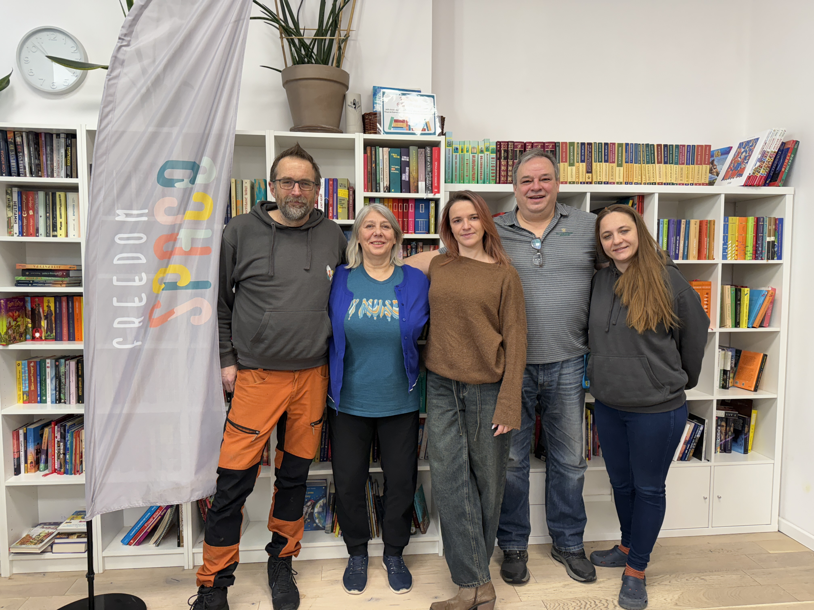

Voluntering for Ukraine (Krakow 2026)

Volunteering at the Freedom Space Foundation
Thank you Tomek, Basia, Yaroslava!
Volunteering at
Freedom Space Foundation
Day1. Sorting food for distribution
Day 1. Planning the day
Day 1. Packing adult diapers for delivery in Lviv, Ukraine.
Day2. Lena distributing food (pirogies with meat and cheese)
Day 2. Distributing food to local refugees
Day 2. Line to pick up food at the Freedom Space.
Day 2. Picking up food at the Freedom Space
Day 2. Lena distributing food.
Day 2. Packing wheelchairs and walkers for delivery in Lviv, Ukraine.
Day 2. Loading truck for delivery of humanitarian aid in Lviv
Day 3. The Łyczakowski Cemetery: Geroiam slava!
Day 3.
"Melitopol Here"--an NGO to sustain the displaced community of the city that Russia occupied
Day 3.
At the "Melitopol Here" Office ( organization of the refugees from the occupied Melitopol)
Delivered food to the members of the community.
Volunteering, Day 4.
{kind=link}
{kind=link}
{kind=link}
{kind=link}
{kind=link}
{kind=link}
{kind=link}
{kind=link}
{kind=link}
{kind=link}
{kind=link}
{kind=link}
{kind=link}